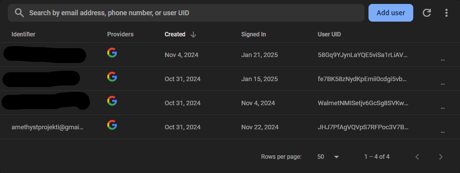

Kuvia keskeneräisitä vaiheista

Amethyst on mobiilisovellus jonka ydintoimintoina on päivän tarot, päivän horoskooppi, unipäiväkirja sekä kristalliopas.
- Selainpohjaista frontend ohjelmointia
- Ryhmätyöskentely
- Git-versionhallinnan perusteet
- Vähän Firebasen perusteita
- React nativen perusteet
- Mobiilisovelluskehityksen perusteet
- Eri npm pakettejen hyödyntäminen
- Firebasen perusteet
- Firebase säännöt ja storage
- Google authentikaation perusteet ja miten käyttäjältä saa haettua lisää dataa mitä ei saa suoraan
- Frontend koodausta
- Firebase tietokanta juttuja
- Google authentikaatio
- Sovelluksen responsiivisuus
- Sovelluksen lataus animaatiot
- Sovelluksen fetchit (päivän horoskooppi ja käyttäjän syntymäaika)
- Sovelluksen database yhteydet
- Sovelluksen tyylittely
- Apk pakettien rakentaminen
- Miten paljon helpompi on tehdä sovellus jos siitä on tehty Figmat ja suunitelmat hyvin
- Parikoodauksen hyödyllisyys
- Responsiivisuus vaikeampaa puhelimelle tehdessä kuin selaimelle
- Dokumentoinnin tärkeys
- Miten käyttäjän tietoja saa Google Authentikaation kautta
- Käyttäjä testauksen tärkeyden
Nappi jolla viedään horoskoopin nimi ja kuva "HoroscopeData" sivulle
<HoroscopeButton //HoroscopeButton-komponentti joka on importattu
key={horoscopeText} //Ainutlaatuinen avain (key) tämän napin tunnistamiseen Reactissa
title={horoscopeText} //Napin teksti, joka näyttää horoskoopin nimen
img={horoscopeImage} //Napin kuva, joka näyttää horoskoopin kuvan
onPress={() => //Toiminto, joka suoritetaan, kun nappia painetaan
navigation.navigate('HoroscopeData', { //Siirrytään HoroscopeData Sivulle
itemId: horoscopeText, //Viedään horoscopeText eli horoscopen nimi itemId nimellä HoroscopeData sivulle
itemImage: horoscopeImage, //Viedään horoscopeImage eli horoscopen kuva itemImage nimellä HoroscopeData sivulle
})
}
/>
Otetaan vastaan horoskoopin nimi ja kuva ja tehdään nimen avulla fetch
const HoroscopeData: React.FC = ({ route }) => {
//Otetaan parametrit (propsit), jotka on välitetty navigoinnin kautta
const { itemId } = route.params; //Tuotu ID eli horoscopen nimi propsina
const { itemImage } = route.params; //Tuotu horoskoopin kuva propsina
//Määritellään komponentien tilat (state)
const [data, setData] = useState(null); //Tallennetaan haettu data aluksi tyhjä
const [loading, setLoading] = useState(true); //Sivun lataus tila aluksi true joka tarkoittaa että lataus symboli näkyy
useEffect(() => { //Käytetään Reactin useEffect-hookia API-kutsun tekemiseen, kun komponentti renderöidään ensimmäisen kerran
fetchHoroscope(); //Suoritetaan fetchHoroscope() funktio
}, []);
// Haetaan API:sta propsin avulla horoskooppi kuvaukset
const fetchHoroscope = async () => {
try {
const response = await fetch(
// Käytetään tuotua id-propsia api-fetchin kanssa
`https://horoscope-app-api.vercel.app/api/v1/get-horoscope/daily?sign=${itemId}&day=TODAY`,
{
headers: {
accept: 'application/json',
},
}
);
const result = await response.json();
setData(result.data); // Otetaan data talteen
} catch (error) {
console.error('Error fetching horoscope:', error); //Error viesti jos fetch epäonnistuu
} finally {
setLoading(false); //setLoading(false) poistaa lataus animaation kun fetch on tehty
}
};
if (loading) { //Jos true niin lataus animaatio on päällä
return Tietokantana sovelluksessa toimi Firebase johon tallentiin suurin osa sovelluksen kuvista (79 tarot kuvaa ja 18 mineraali kuvaa) ja tarottejen, mineraalien ja unisymboleiden tekstit.
Firebase tietokanta
Firebase storage
Kuvia joissa tietokanta on käytössä
Firebasea käytetään sovelluksessa myös Google Authentikaatio tekemiseen josta sovellus saa käyttäjän syntymäajan horoskooppia varten ja käyttäjän etunimen menua varten.
Firebase Google authentikaatio

- Tietokanta sovelluksessa ehkä vähän turha mutta opetti hyvin
- Google authentikaatio kanssa ei kovin tärkeä
- Alusta astin miettinyt responsiivisuutta
- Paremmat kommentit kodiin
- Vaihtanut Expon pois
Tykkäsin tehdä mobiilisovellusta tosi paljon ja Eeliksen kanssa mietittiin että tehdään oppinäytetyöksi sovelluksen julkaiseminen.
Tietokannat ja datan liikkuminen sovelluksen sisällä on kiinnostavaa ja saattaisin nähdä itseni työskentelevän tälläisten asioiden parissa.